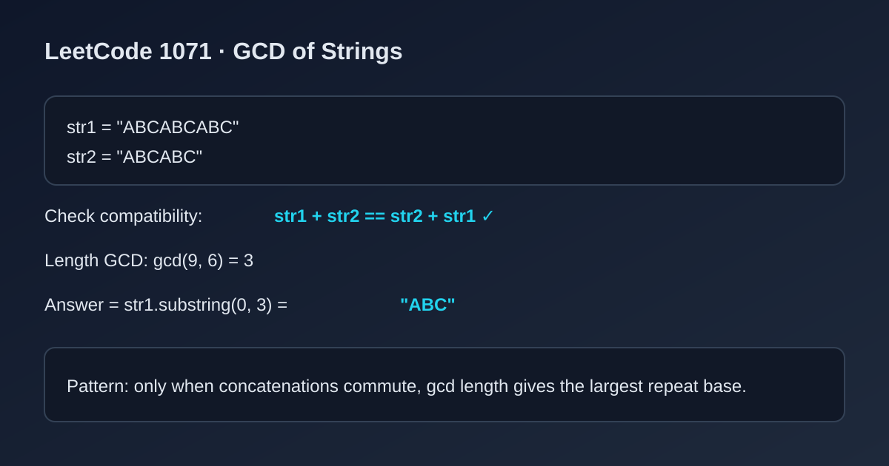

LeetCode 1071: Greatest Common Divisor of Strings (Concatenation Check + Length GCD)
LeetCode 1071StringMathToday we solve LeetCode 1071 - Greatest Common Divisor of Strings.
Source: https://leetcode.com/problems/greatest-common-divisor-of-strings/

English
Problem Summary
Given two strings str1 and str2, return the largest string x such that both str1 and str2 can be formed by repeating x.
Key Insight
If a common base string exists, then str1 + str2 must equal str2 + str1. If this fails, answer is empty. If it passes, the answer length is gcd(len(str1), len(str2)).
Algorithm Steps
1) Check concatenation compatibility: str1 + str2 == str2 + str1.
2) If false, return empty string.
3) Compute gcd(n, m) where n=len(str1), m=len(str2).
4) Return str1.substring(0, gcdLen).
Complexity Analysis
Time: O(n + m).
Space: O(n + m) for concatenation strings.
Reference Implementations (Java / Go / C++ / Python / JavaScript)
class Solution {
public String gcdOfStrings(String str1, String str2) {
if (!(str1 + str2).equals(str2 + str1)) return "";
int len = gcd(str1.length(), str2.length());
return str1.substring(0, len);
}
private int gcd(int a, int b) {
while (b != 0) {
int t = a % b;
a = b;
b = t;
}
return a;
}
}func gcdOfStrings(str1 string, str2 string) string {
if str1+str2 != str2+str1 {
return ""
}
length := gcd(len(str1), len(str2))
return str1[:length]
}
func gcd(a, b int) int {
for b != 0 {
a, b = b, a%b
}
return a
}class Solution {
public:
string gcdOfStrings(string str1, string str2) {
if (str1 + str2 != str2 + str1) return "";
int len = std::gcd((int)str1.size(), (int)str2.size());
return str1.substr(0, len);
}
};from math import gcd
class Solution:
def gcdOfStrings(self, str1: str, str2: str) -> str:
if str1 + str2 != str2 + str1:
return ""
return str1[:gcd(len(str1), len(str2))]var gcdOfStrings = function(str1, str2) {
if (str1 + str2 !== str2 + str1) return "";
const gcd = (a, b) => {
while (b !== 0) {
[a, b] = [b, a % b];
}
return a;
};
return str1.slice(0, gcd(str1.length, str2.length));
};中文
题目概述
给定两个字符串 str1 和 str2，返回最大的字符串 x，使得 str1 与 str2 都能由 x 重复拼接得到。
核心思路
若存在公共“基串”，必须满足 str1 + str2 == str2 + str1。不满足则直接无解。满足时，答案长度等于两个长度的最大公约数 gcd(len1, len2)。
算法步骤
1）先校验 str1 + str2 与 str2 + str1 是否相同。
2）若不同，返回空串。
3）计算长度最大公约数 gcd(len1, len2)。
4）返回 str1 的前 gcdLen 个字符。
复杂度分析
时间复杂度：O(n + m)。
空间复杂度：O(n + m)（拼接比较时）。
多语言参考实现（Java / Go / C++ / Python / JavaScript）
class Solution {
public String gcdOfStrings(String str1, String str2) {
if (!(str1 + str2).equals(str2 + str1)) return "";
int len = gcd(str1.length(), str2.length());
return str1.substring(0, len);
}
private int gcd(int a, int b) {
while (b != 0) {
int t = a % b;
a = b;
b = t;
}
return a;
}
}func gcdOfStrings(str1 string, str2 string) string {
if str1+str2 != str2+str1 {
return ""
}
length := gcd(len(str1), len(str2))
return str1[:length]
}
func gcd(a, b int) int {
for b != 0 {
a, b = b, a%b
}
return a
}class Solution {
public:
string gcdOfStrings(string str1, string str2) {
if (str1 + str2 != str2 + str1) return "";
int len = std::gcd((int)str1.size(), (int)str2.size());
return str1.substr(0, len);
}
};from math import gcd
class Solution:
def gcdOfStrings(self, str1: str, str2: str) -> str:
if str1 + str2 != str2 + str1:
return ""
return str1[:gcd(len(str1), len(str2))]var gcdOfStrings = function(str1, str2) {
if (str1 + str2 !== str2 + str1) return "";
const gcd = (a, b) => {
while (b !== 0) {
[a, b] = [b, a % b];
}
return a;
};
return str1.slice(0, gcd(str1.length, str2.length));
};
Comments